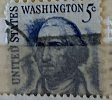
| SOURCE | TITLE| IMAGE MATCH | click to source page |
| eBay | GEORGE WASHINGTON 5 CENT BLUE UNITED STATES POSTAGE STAMP. USED | eBay | 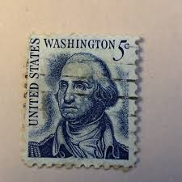 |
| HipStamp | US 1304 George Washington 5c coil single (shiny gum) MNH 1966 | United States, General Issue Stamp / HipStamp | 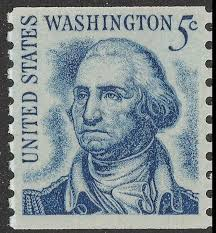 |
| eBay | George Washington Precancel 5 Cent Stamp | eBay | 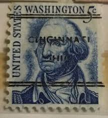 |
| eBay | George Washington 5 cent blue United States Postage 1967 Used Antique stamp. | eBay | 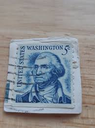 |
| eBay | Vintage George Washington Five Cent Stamp Blue Unused READ Ungraded | eBay | 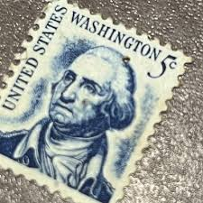 |
| eBay | 5 Cent Politicians Postage Stamps for sale | eBay | 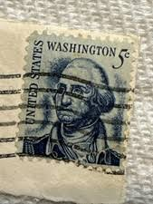 |
| eBay | Blue US Postage Stamps for sale | eBay | 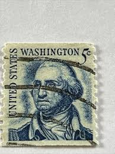 |
| Dreamstime.com | George Washington, American Founding Father Who Served As the First President of the United States Editorial Image - Image of politician, famous: 228583425 | 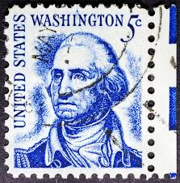 |
| eBay | 5 Cent Historical Figures US Postage Stamps for sale | eBay | 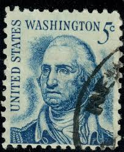 |
| eBay | USA - 1966 - Prominent Americans - George Washington - 5¢ x2 - #3216 | eBay | 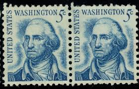 |
| eBay UK | GEORGE WASHINGTON 5 CENT BLUE UNITED STATES POSTAGE STAMP. USED | eBay UK | 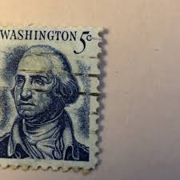 |
| www.sommcast.com.br | George Washington 5 Cent Blue Postage Stamp Used | 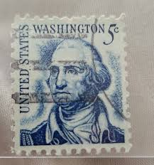 |
| HipStamp | 1283 5 cents George Washington Dirty Face (1966) Stamp used VF | United States, General Issue Stamp / HipStamp | 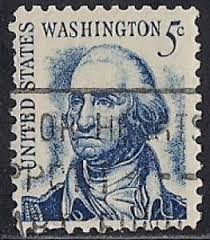 |
| eBay | Historical Figures Used Blue Used US Stamps (1901-Now) for sale | eBay | 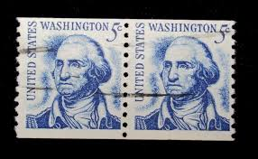 |
| Federal University of Agriculture, Abeokuta | GEORGE WASHINGTON 5 CENT US POSTAGE STAMP | 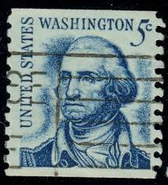 |
| Alamy | George Washington, 1st President of the United States, held office from 1789 to 1797. Henry Brintnell Bounetheau's 1845 portrait depicts him in his uniform as Commander of the Continental Army during the | 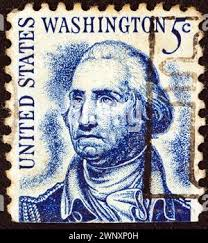 |
| Find Your Stamps Value | Value of 1926 - 1928 Perf 11 x 10 1/2 Rotary Press George Washington Stamp stamps | 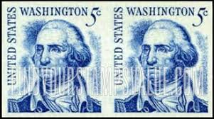 |
| eBay | Machine Cancel 1 Cent Blue United States Stamps for sale | eBay | 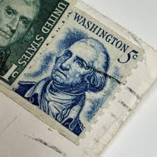 |
| HipStamp | USA 1966 Sc#1304 5c Blue George Washington USED. | United States, General Issue Stamp / HipStamp | 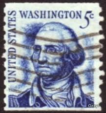 |
| eBay | 5 Cent Washington Blue Used US Stamps (1901-Now) | eBay | 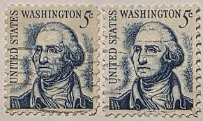 |
| HipStamp | 1304 5 cent George Washington Coil Pair XF used | United States, General Issue Stamp / HipStamp | 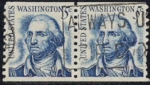 |
| Federal University of Agriculture, Abeokuta | George Washington 5 cent blue United States Postage 1967 Used Antique stamp. – FUNAAB Zoo Park | 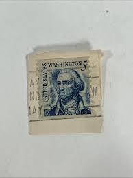 |
| pixels.com | George Washington Cancelled American Stamp Wood Print by Randy Steele - Pixels | 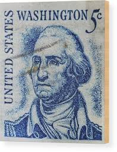 |
| Depop | Unshaven dirty face George Washington stamped stamps... | Depop | 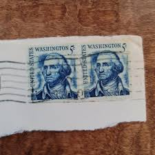 |
| Federal University of Agriculture, Abeokuta | GEORGE WASHINGTON STAMP 5 CENTS | 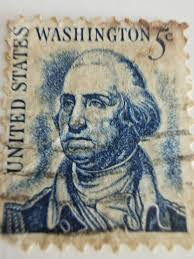 |
| Etsy | Perforation Error 1966, Genuine US Vintage Coil Pair, Scott 1304 - Etsy | 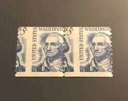 |
| eBay | 5 Cent Gray United States Stamps for sale | eBay | 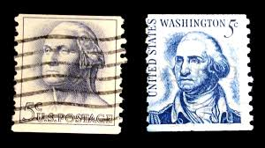 |
| betterlifeafrica.org | Collectible Blue George Washington 5 Cent Stamp Great Condition 1912 - betterlifeafrica.org | 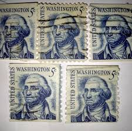 |
| Federal University of Agriculture, Abeokuta | GEORGE WASHINGTON STAMP 5 CENT STAMP | 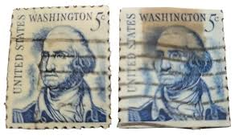 |
| HipStamp | US 1283 MNH VF 5 Cent Washington Plate Block | United States, General Issue Stamp / HipStamp | 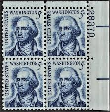 |
| Thomas Jefferson : r/askStampCollectors | 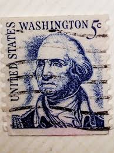 | |
| labahpl.com | VINTAGE STAMPS 5 Cent BLUE George Washington STAMP | 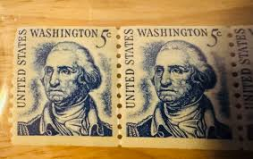 |
| Alamy | George Washington statue isolated on white background Stock Photo - Alamy | 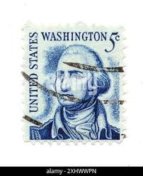 |
| ebid.net | US Stamp #1625 used: 1975 13c Flag over Independence Hall - coil [2] on eBid United States | 142702371 | 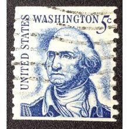 |
| makers-and-menders.co.uk | George Washington United States Postage Stamps 2 block - 5c 1966 — Makers & Menders | 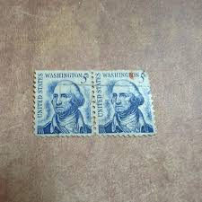 |
| Shutterstock | 79+ Thousand George Vintage Postage Stamp Washington Royalty-Free Images, Stock Photos & Pictures | Shutterstock | 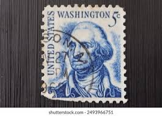 |
| Todocolección | united states, george washington 3 centavos 193 - Buy Antique stamps of United States on todocoleccion | 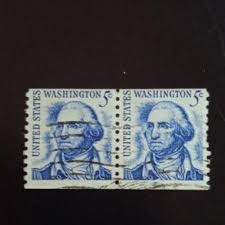 |
| H.E. Harris | 1966 2¢ Frank Lloyd Wright Plate Block - H.E. Harris | 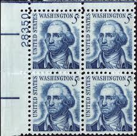 |
| BidCurios | 1966 USA 5-cent "George Washington" Strip of 3 Used Stamps #2 - BidCurios | 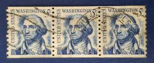 |
| allnumis.com | 5 Cents 1962 - George Washington (1732-1799), US Presidents - George Washington - United States of America - Stamp - 52062 | 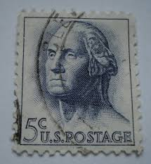 |
| Dreamstime.com | USA Postage Stamp Wright Brothers First Flight Editorial Photo - Image of cents, 1949: 110309831 | 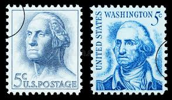 |
| bellmotosbh.com.br | postage stamps | 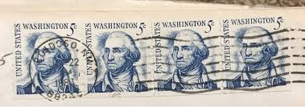 |
| eBay | Vintage 1962 George Washington 5 Cent Stamp | eBay | 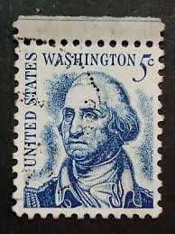 |
| eBay | Rare 1967 George Washington Blue 5 Cent Stamp | eBay | 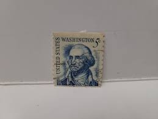 |
| eBay | Vintage George Washington Five Cent Stamp Blue Unused READ Ungraded | eBay | 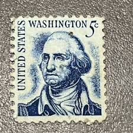 |
| eBay | 1967 US 5 Cent George Washington Stamp Blue - On Post - Rare Vintage | eBay | 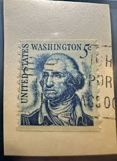 |
| eBay | 1967 US 5 Cent George Washington Stamp Blue - Used - Rare Vintage | eBay | 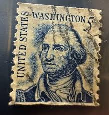 |
| eBay | Vintage 1967 George Washington Blue Stamp *RARE* | eBay | 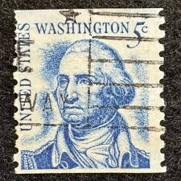 |
| eBay | Rare US postage stamps. 1c Jefferson 5c Washington vintage | eBay | 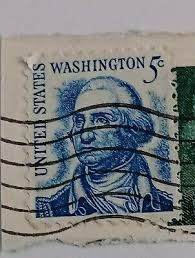 |
| eBay | 3X 1967 Geo. Washington, “Rare” United States Postage, 5 Cents Stamp, Blue | eBay | |
| eBay | U.S. Postage ~ George Washington ~ c.1967 ~ 5¢ Blue Stamp ~ Posted/Cancelled | eBay | |
| eBay | Vintage George WASHINGTON Stamp 5 CENT BLUE UNITED STATES POSTAGE Canceled Vtg | eBay | |
| eBay | Vintage USA United States Blue George Washington 5 Cent Postal Stamp | eBay | |
| eBay | Antique George Washington 5 Cent Blue Postage Stamp Used | eBay | |
| eBay | GEORGE WASHINGTON 5 CENT BLUE | eBay | |
| eBay | Blue George Washington U.S. Postage Stamp 5c | eBay | |
| Gumtree Australia | cents stamps | Antiques, Art & Collectables | Gumtree Australia Local Classifieds | |
| eBay | 1304 Used, PSE Graded 95, Cert # 01349928 | eBay | |
| eBay | Center of North America, Visit Rugby, North Dakota ND Postcard - June 27, 1970 | eBay |